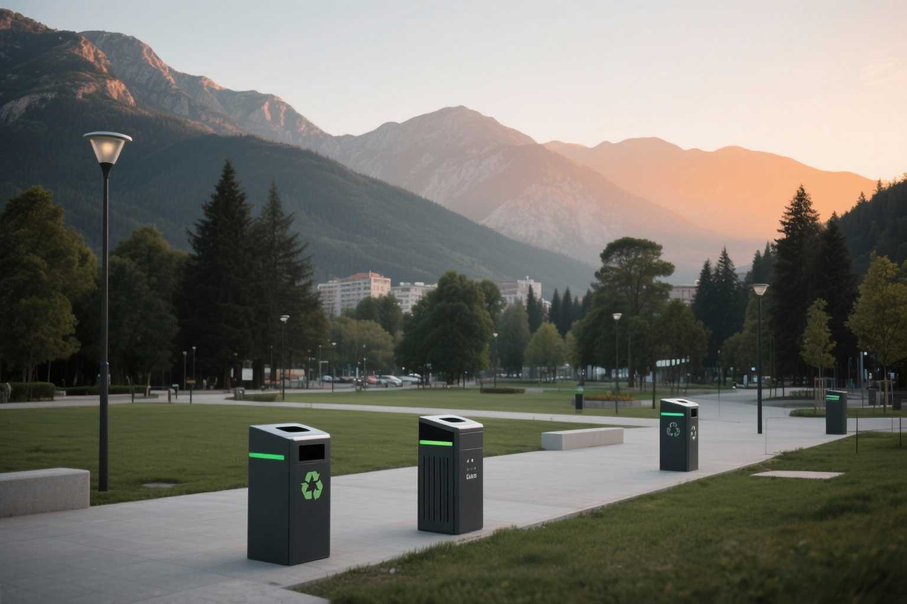
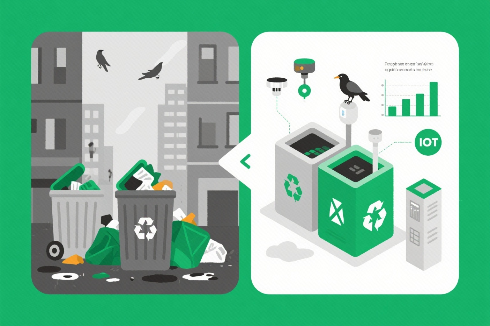
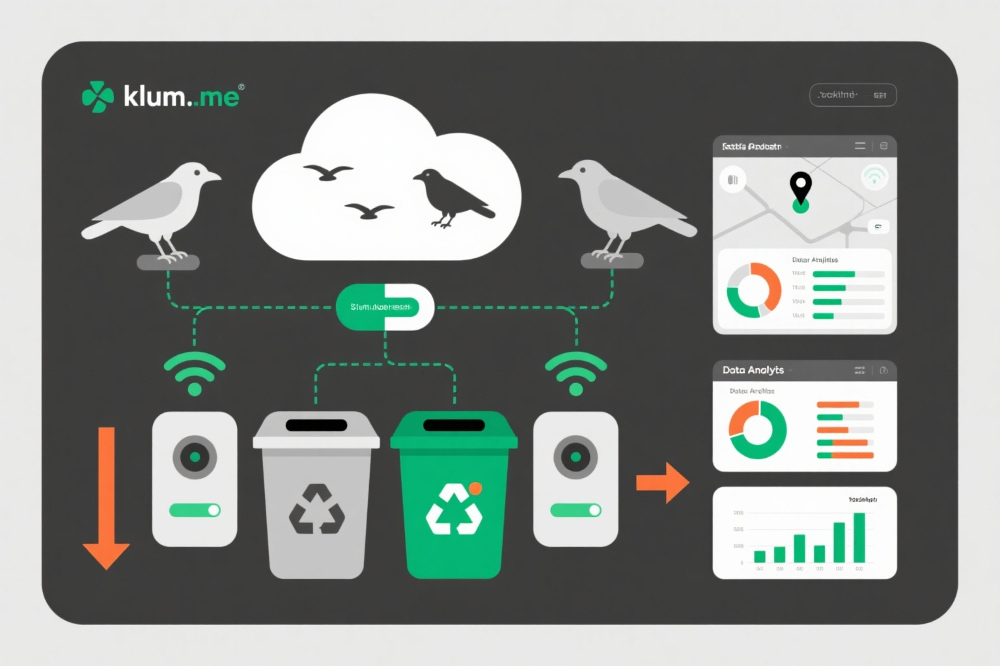

Šta ako vam kažem da nam u prirodi već postoji armija malih ekoloških radnika s inteligencijom sedmogodišnjeg djeteta, spremnih da očiste našu okolinu?
Konvencionalni sistemi za upravljanje otpadom su neučinkoviti, skupi i štetni po okolinu

Kamioni prikupljaju i prazne kante bez obzira na popunjenost, trošeći gorivo i vrijeme
Pretrpane kante stvaraju zdravstvene rizike i negativan uticaj na životnu sredinu
Milioni se troše na kompleksne IoT sisteme koji nisu održivi dugoročno
Spajamo prirodnu inteligenciju vrana s pametnom tehnologijom za održivo upravljanje otpadom
Vrane s inteligencijom 7-godišnjeg djeteta uče da prikupljaju otpad za nagrade
Pametne kante prepoznaju predmete i nagrađuju vrane kikirikijem
Praćenje kretanja vrana i analiza ekološkog uticaja u realnom vremenu
Inteligentna vrana prepoznaje predmet koji ne pripada prirodi
IoT senzor prepoznaje predmet i potvrđuje prijem
Automatski dispencer izdaje kikiriki kao nagradu
Sistem beleži lokaciju, vrstu otpada i uticaj
Kombinacija najnovijih IoT tehnologija, mašinskog učenja i prirodne inteligencije

Kako ćemo graditi mrežu vrana za čistiju budućnost - od prvi pilot projekta do nacionalnog sistema
Pilot Faza - Osnivanje
10 Vrana
Odabrana i obučena grupa za početak
1 Kanta
Pametna kanta sa senzorima za nagrađivanje
Lokacija: Podgorica
Gradski park - kontrolisano testiranje
Cilj
Dokazati koncept i uspostaviti osnovu
Trajanje: 12 meseci
Proširenje - Prva Ekspanzija
60 Vrana
6x povećanje - Nova grupa za druge lokacije
3 Kante
Pokrivanje šireg dela centra Podgorice
Mobilna Aplikacija
Praćenje aktivnosti vrana u realnom vremenu
Cilj
Dokazati skalabilnost modela
Trajanje: 12 meseci
Skaliranje - Druga Ekspanzija
200 Vrana
3.3x povećanje - Cela Podgorica pokrivena
10 Kanti
Optimalna pokrivenost gradskih zona
⭐ MOBILNOST JATA
Vrane se mogu koordinovano kretati i komunicirati
Cilj
Autonomni sistem - Jata rade samostalno
Trajanje: 12 meseci
Proširenje na druge gradove Crne Gore i početak Balkan ekspanzije
🚀 Nacionalna Mreža
Mogućnost proširenja na EU nivou - Vrane su postale ključna komponenta ekološkog sistema
100x
Povećanje kapaciteta
10 → 1000 vrana
10x
Povećanje infrastrukture
1 → 10 kanti
5
Godina do
nacionalne mreže
Kombinacija ekspertize iz oblasti ekologije, tehnologije i biznisa
Ekspert za ponašanje vrana i trening životinja
Stručnjak za senzore, komunikaciju i IoT arhitekturu
Iskustvo u skaliranju ekoloških startup projekata
Pridružite nam se u revoluciji ekološkog upravljanja otpadom. Priroda nam je pružila rješenje - mi ga samo pametno koristimo.